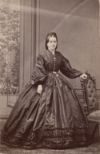

Beaubien-Perrault-Benington - Person Sheet
Beaubien-Perrault-Benington - Person Sheet
Spouses

Birth1841, Iles-de-la-Madeleine, Québec20
Death17 Aug 1895, Montréal, Québec20
FatherLouis Eusèbe Borne (-1841)
MotherElizabeth Zélie Aubert De Gaspé (1818-1893)
Marriage6 Jul 1864, Québec, Québec20
Notes for Hon. Thomas Jean Jacques Loranger
Depute de Laprairie a l’Assemblee du Bas Canada 1854. Juge de la Cour Superieure 1863-79. Auteur de plusieurs ouvrages legaux. Directeur de la revue legale Thémis. Prof de droit administratif a Laval. LLD (Laval). Comandeur de l’Ordre de Pie IX.
22 Né à Yamachiche, le 2 février 1823, fils de Joseph Loranger, cultivateur (fut aussi aubergiste), et de Marie-Louise Dugal.
Étudia au séminaire de Nicolet de 1834 à 1841. À compter de 1842, fit l'apprentissage du droit auprès d'Antoine Polette, à Trois-Rivières; reçu au barreau en
1844.
Pratiqua sa profession à Trois-Rivières et à Nicolet avant de joindre le cabinet de Lewis Thomas Drummond, à Montréal. Nommé conseiller de la reine en 1854.
L'un des substituts du procureur général devant la Cour seigneuriale créée en 1854. Publia à Montréal, en 1855, Mémoire composé de la plaidoirie de T.J.J.
Loranger [...] devant la Cour seigneuriale et, en 1856, Suite du mémoire de M. Loranger contenant sa réplique [...]. Fit partie, du 28 mars 1856 au 31 janvier
1861, de la commission chargée de la refonte des statuts du Bas-Canada. En 1858, s'associa à ses deux frères avocats, dont Louis-Onésime Loranger.
Collaborateur, de 1869 à 1872, de la Revue légale, publiée à Montréal et à Sorel. Cofondateur, en 1879, de la revue montréalaise la Thémis.
Élu député de Laprairie en 1854; réformiste, puis bleu. Fit partie du ministère Macdonald-Cartier à compter du 26 novembre 1857: conseiller exécutif jusqu'au 29
juillet 1858 et secrétaire provincial du Canada jusqu'au 1er août 1858. Réélu en 1858; bleu. Réélu en 1861; indépendant.
Son siège de député devint vacant par suite de sa nomination, le 28 février 1863, comme juge de la Cour supérieure; exerça ces fonctions à Beauharnois, à
Saint-Jean (Saint-Jean-sur-Richelieu), puis à Sorel jusqu'à sa retraite en mai 1879. Fut ensuite professeur de droit administratif à l'université Laval à Montréal.
Membre du premier Conseil de l'instruction publique en 1859. Président de l'Association Saint-Jean-Baptiste de Montréal en 1880 et 1884. Commandeur de
l'ordre de Saint-Grégoire-le-Grand. Est aussi l'auteur de: Commentaire sur le Code civil du Bas-Canada (2 vol., Montréal, 1873-1879) et de Lettres sur
l'interprétation de la constitution fédérale [...] (2 vol., Québec, 1883-1884). À titre de président d'une commission chargée en 1877 de codifier les lois générales
en vigueur dans la province de Québec, fit paraître à Québec, en 1878, Premier rapport des commissaires [...], puis, en 1881,Rapport de la commission de
révision et refonte des statuts [...] et, en 1882, Travaux de la commission de codification des statuts sur les réformes judiciaires.
Décédé à Sainte-Pétronille, île d'Orléans, le 18 août 1885, à l'âge de 62 ans et 6 mois. Après des obsèques solennelles célébrées dans l'église Notre-Dame de
Montréal, fut inhumé dans le cimetière Notre-Dame-des-Neiges, le 21 août 1885.
Avait épousé à Montréal, le 13 mai 1850, Sarah-Angélique Truteau; puis, à Québec, le 6 juillet 1864, Zélie-Angélique Borne, arrière-petite-fille de Pierre-Ignace
Aubert de Gaspé.
22 Né à Yamachiche, le 2 février 1823, fils de Joseph Loranger, cultivateur (fut aussi aubergiste), et de Marie-Louise Dugal.
Étudia au séminaire de Nicolet de 1834 à 1841. À compter de 1842, fit l'apprentissage du droit auprès d'Antoine Polette, à Trois-Rivières; reçu au barreau en
1844.
Pratiqua sa profession à Trois-Rivières et à Nicolet avant de joindre le cabinet de Lewis Thomas Drummond, à Montréal. Nommé conseiller de la reine en 1854.
L'un des substituts du procureur général devant la Cour seigneuriale créée en 1854. Publia à Montréal, en 1855, Mémoire composé de la plaidoirie de T.J.J.
Loranger [...] devant la Cour seigneuriale et, en 1856, Suite du mémoire de M. Loranger contenant sa réplique [...]. Fit partie, du 28 mars 1856 au 31 janvier
1861, de la commission chargée de la refonte des statuts du Bas-Canada. En 1858, s'associa à ses deux frères avocats, dont Louis-Onésime Loranger.
Collaborateur, de 1869 à 1872, de la Revue légale, publiée à Montréal et à Sorel. Cofondateur, en 1879, de la revue montréalaise la Thémis.
Élu député de Laprairie en 1854; réformiste, puis bleu. Fit partie du ministère Macdonald-Cartier à compter du 26 novembre 1857: conseiller exécutif jusqu'au 29
juillet 1858 et secrétaire provincial du Canada jusqu'au 1er août 1858. Réélu en 1858; bleu. Réélu en 1861; indépendant.
Son siège de député devint vacant par suite de sa nomination, le 28 février 1863, comme juge de la Cour supérieure; exerça ces fonctions à Beauharnois, à
Saint-Jean (Saint-Jean-sur-Richelieu), puis à Sorel jusqu'à sa retraite en mai 1879. Fut ensuite professeur de droit administratif à l'université Laval à Montréal.
Membre du premier Conseil de l'instruction publique en 1859. Président de l'Association Saint-Jean-Baptiste de Montréal en 1880 et 1884. Commandeur de
l'ordre de Saint-Grégoire-le-Grand. Est aussi l'auteur de: Commentaire sur le Code civil du Bas-Canada (2 vol., Montréal, 1873-1879) et de Lettres sur
l'interprétation de la constitution fédérale [...] (2 vol., Québec, 1883-1884). À titre de président d'une commission chargée en 1877 de codifier les lois générales
en vigueur dans la province de Québec, fit paraître à Québec, en 1878, Premier rapport des commissaires [...], puis, en 1881,Rapport de la commission de
révision et refonte des statuts [...] et, en 1882, Travaux de la commission de codification des statuts sur les réformes judiciaires.
Décédé à Sainte-Pétronille, île d'Orléans, le 18 août 1885, à l'âge de 62 ans et 6 mois. Après des obsèques solennelles célébrées dans l'église Notre-Dame de
Montréal, fut inhumé dans le cimetière Notre-Dame-des-Neiges, le 21 août 1885.
Avait épousé à Montréal, le 13 mai 1850, Sarah-Angélique Truteau; puis, à Québec, le 6 juillet 1864, Zélie-Angélique Borne, arrière-petite-fille de Pierre-Ignace
Aubert de Gaspé.